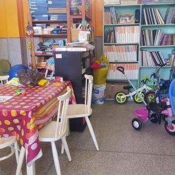

Touch'à Tout, la ludothèque spécialisée de l'AMARDEV
Sentir, percevoir, repérer, toucher, explorer, découvrir, expérimenter, comprendre, rencontrer, partager, sensibiliser, s'amuser, apprendre, s'intégrer… par le jeu.
« Les jeux des enfants se transforment peu à peu en construction adaptée exigeant toujours plus de travail effectif… au point que toutes les acquisitions spontanées s'observent entre le jeu et le travail. » Piaget, « Psychologie et pédagogie », Éditions Denoël
Horaires :
Classes de l'école de non-voyants : mardi et jeudi, 9h–11h
Enfants hors cadre scolaire : lundi, mardi, mercredi, 14h30–16h30
Samedi : 10h–12h
À la ludothèque, les enfants trouvent des livres et des jeux adaptés à chacun. Ils participent à des activités manuelles (collage, découpage, dessin…), musicales, sportives, de jardinage et de cuisine.

Le centre de ressources d'Aïn Chock
Situé à l'Université des lettres d'Aïn Chock, le centre de ressources AMARDEV bénéficie d'une convention de partenariat avec l'Université Hassan II. Il assure :
- La numérisation de textes sur CD ou clé USB
- La lecture de documents
- La transcription en braille de documents en arabe, en français et en anglais
Centre de transcription braille — Littérature jeunesse
Ce centre vise à donner accès à la lecture et à la culture aux jeunes déficients visuels :
- Donner les moyens de lire à un nombre maximum de jeunes non-voyants de 7 à 15 ans
- Améliorer l'accès à l'utilisation du braille
- Insérer culturellement les jeunes enfants déficients visuels